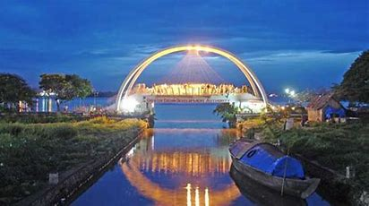
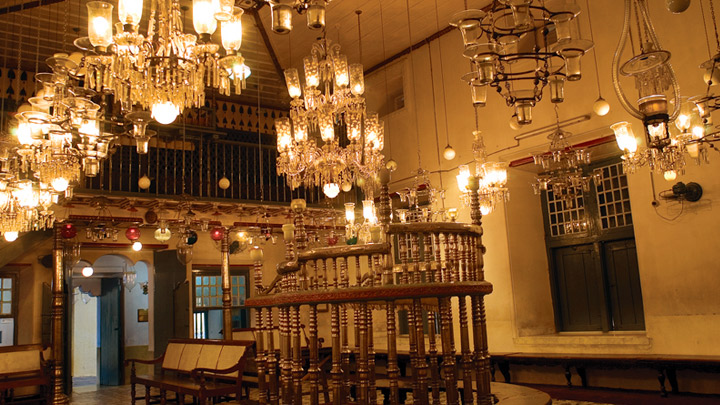

Fort Kochi

Marine Drive

Located on the coast of the Arabian Sea with Kottayam and Alappuzha districts in the south, ldukki in the east and Thrissur in the north, Ernakulam is a booming business metropolis. A fascinating mixture of the old and the new, the district comprises many interesting cities including Kochi (Cochin), the commercial capital of Kerala. One of the finest natural harbours in the world, Kochi, renowned as the 'Queen of the Arabian Sea', was once a major centre for commerce and trade. The British, Arabs, Chinese, Portuguese, Dutch etc., have all come to its shores in search of exotic spices and sandalwood. Even today, Ernakulam continues the tradition of welcoming visitors with its customary warmth and hospitality.